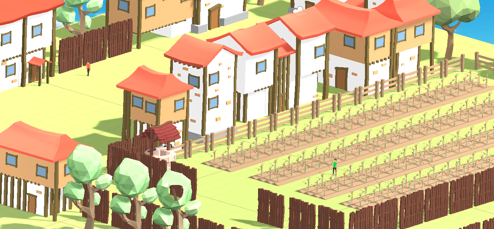

The Social Cloud
by Christina Liu

Artist Statement
Christina Liu is an New York born and raised artist working in film/video, photography and illustration. Being a first generation Asian American, she is heavily influenced by American culture and also her family’s Chinese roots. Her experiences traveling the world constantly challenges her perspective(maybe expanded on this and how it relates to your art practice) . Her artwork is largely autobiographical and often performative while discussing social issues, politics and racial injustice.
Project Statement
Christina’s work explores the power of social media. The work questions how social media is used for connection, addiction, indulgence, and disengagement with the ‘real world’. The Social Cloud is a video created based on archived social media posts during 2020.